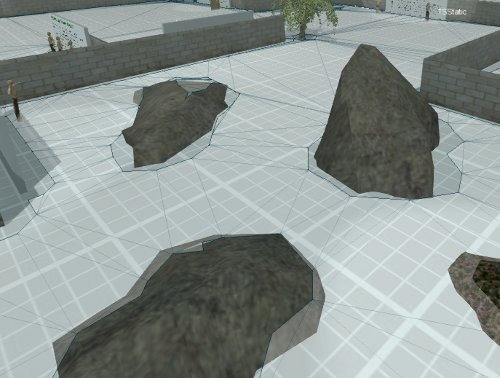

|
 |
Navigation
Ecstasy Motion makes use of Google's Recast library to
create a navigation mesh ("navmesh"), which enables
actors to find their way around obstacles in the scene.
Navmesh properties can be modified using the Inspector
window, after selecting the navmesh in the scene tree.
|